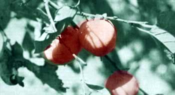
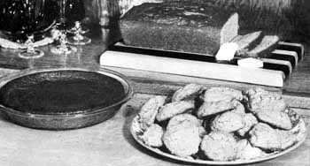

Add Spice To Your Menus With Persimmons
September/October 1974
The first hard frost of autumn is dreaded by most of my neighbors, because its arrival marks the end of the bright flowers and hints at the approach of winter. But I, and everyone who shares my secret, anxiously await that cold snap . . . for to us it means the ripening of the persimmon.
Persimmon trees have grown wild in America for centuries. Their range stretches from New Jersey to Nebraska and southward to the Gulf. Early settlers learned that the flame-colored fruit could be made into a variety of tasty dishes . . . but first, by trial and error, those same settlers had to learn the secret of its harvest.
When the fruit hangs plump and luscious-looking from the tree, it's a sorry person who tastes it. One bite of the firm persimmon and your mouth puckers up as though you'd gulped a glass of vinegar. Once the bright morsel has been touched by frost, though-when it hangs from the tree wrinkle-skinned and soft-a persimmon is sweet and has a spicy, plum-like flavor.
In the southernmost states-where frost is unlikely and the persimmon ripens by aging-it's usually wrinkled and ready to pick by early December. The process can be hastened by placing the firm fruit in the refrigerator for two or three days and then bringing it out into room temperature for several days more.
The whole persimmon is delicious as a between-meal treat, just as an apple or orange is. Or it may be peeled and sliced for a tempting addition to a fruit salad.
For the majority of persimmon recipes, however, you need only pulp . . . so, once you've gathered the fruit, wash it and press your harvest through a colander. Since most dishes require only a cup of the resulting mash, you'll probably find it most convenient to pack and freeze containers holding just that amount.
At my house the favorite persimmon specialty is pudding, but close runners-up include bread, cookies and cake. By experimenting with your own recipes and substituting the wild fruit for pumpkin, applesauce and similar ingredients, you can easily develop new dishes every year.
EDITORS NOTE: For additional information about finding, harvesting and cooking with persimmons, see "Persimmons!" by Victor A. Croley, THE Mother Earth News(restricted), NO. 5, page 52.
 EDITORS NOTE: For additional information about finding, harvesting and cooking with persimmons, see ""Persimmons!"" by Victor A. Croley, THE MOTHER EARTH NEWS?, NO. 5, page 52 |
 |
 |